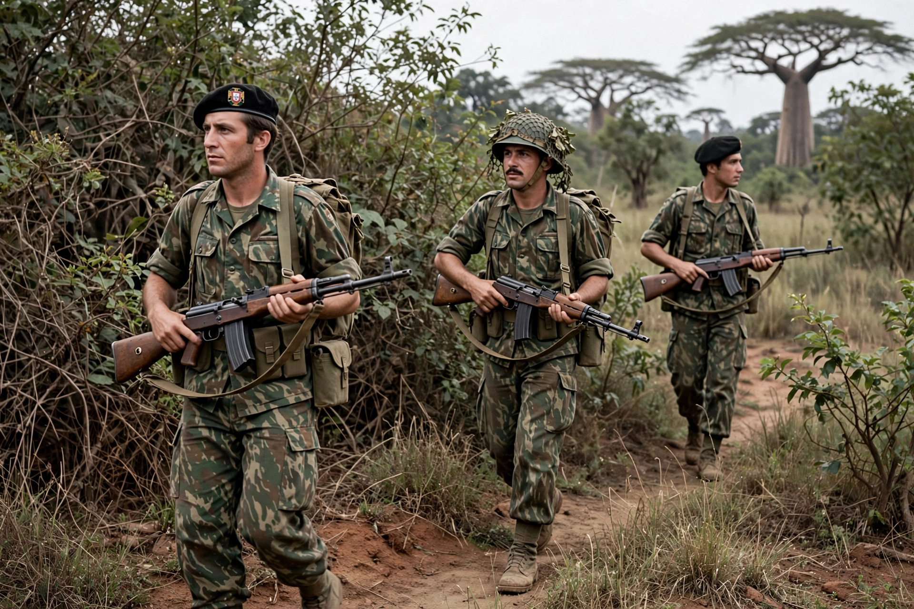

Date: 1961–1974
Location: Angola, Mozambique, Guinea-Bissau
Result: Carnation Revolution; independence of Portugal's African colonies
The Portuguese Colonial War (1961–1974) was a conflict between Portugal's armed forces and independence movements in its African colonies: the MPLA, FNLA and UNITA in Angola, FRELIMO in Mozambique, and the PAIGC in Guinea-Bissau.
Portugal's authoritarian Estado Novo regime under António de Oliveira Salazar and later Marcelo Caetano refused decolonisation, renaming colonies 'overseas provinces' and insisting Portugal was a pluricontinental state.
Fighting began in Angola in 1961. The PAIGC was especially successful in Guinea, controlling much of the countryside. Portugal deployed tens of thousands of troops, many of them conscripts, and the wars consumed a large share of the state budget.
War-weariness among officers helped trigger the Carnation Revolution of 25 April 1974 in Lisbon. The new government negotiated independence: Mozambique and Angola became independent in 1975, followed by civil wars in both countries.